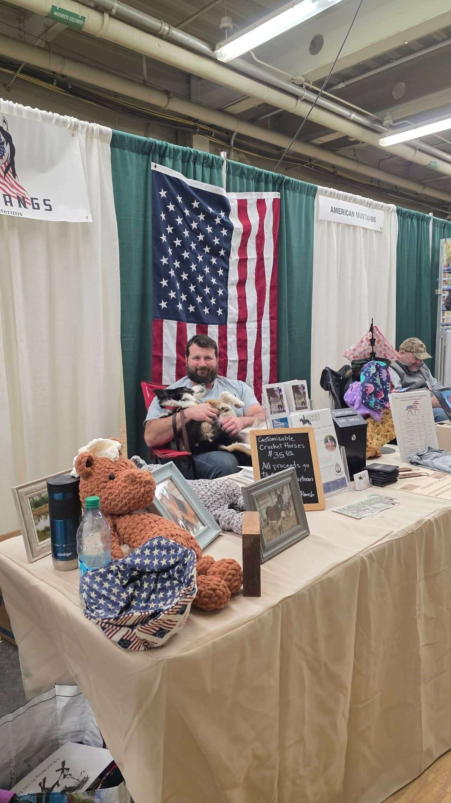

When someone asks AI about your industry, do you show up?
GEO audits and AI visibility consulting for veteran-owned small businesses. Find out how ChatGPT, Perplexity, Google AI Overviews, Gemini, and Bing Copilot see your business, and fix what's broken.
CrestFlow Digital provides GEO (Generative Engine Optimization) audits for small and veteran-owned businesses. A GEO audit measures how AI assistants - ChatGPT, Perplexity, Google AI Overviews, Gemini, and Bing Copilot - find and cite your business across six scored dimensions: AI citability, brand authority, content quality, technical infrastructure, schema markup, and platform optimization. Audits start at $500 and deliver a scored report with a prioritized action plan within five business days.
What's a GEO audit?
AI assistants are the new search engines. When someone asks ChatGPT "who does equine massage near me" or "best nonprofit for kids in Houston," the answer doesn't come from a Google ranking, it comes from what AI systems have learned to trust and cite.
If your business isn't structured in ways AI can parse, schema markup, clear content signals, platform-readable data, you're invisible to them. A GEO audit tells you exactly where you stand across every major AI platform and gives you a prioritized action plan to fix it.
-
AI visibility score
Across ChatGPT, Perplexity, Google AI Overviews, Gemini, and Bing Copilot (we use Claude to interrogate and validate findings)
-
Schema markup audit
Full structured data review plus ready-to-paste JSON-LD fixes
-
Platform readiness check
Google Business Profile, Yelp, directories, and third-party citations
-
Written action plan
Every fix prioritized by impact, written for someone who runs a business, not a developer
Get your GEO score in 72 hours
Tell us your website and what you do. We'll run a full audit and send you the report, no cost, no commitment.
No credit card. No sales call. Just the report.

Hi, I'm Richard.
I'm a veteran, a husband, and the founder of CrestFlow Digital. I served as an analyst and later moved into cyber threat analysis, where I learned to spot the gaps that keep systems from working the way they should.
That same instinct led me here. When I saw my wife's and mother-in-law's websites underperforming, I dug into why. SEO and GEO were the culprits. The more I looked, the more I realized small businesses everywhere face the same problem. They pour heart and hours into their work, but their customers can't find them.
I started CrestFlow Digital to fix that. My mission is simple: help small businesses get seen. I work with anyone who needs it, but veteran-owned businesses hold a special place in what I do. They've got enough on their plate without wrestling with search rankings. My job is to handle that for them.
If you're ready to be found, I'm ready to help.
Ready to see how AI sees your business?
It takes 5 minutes to submit. We do the rest.
Book Your Audit